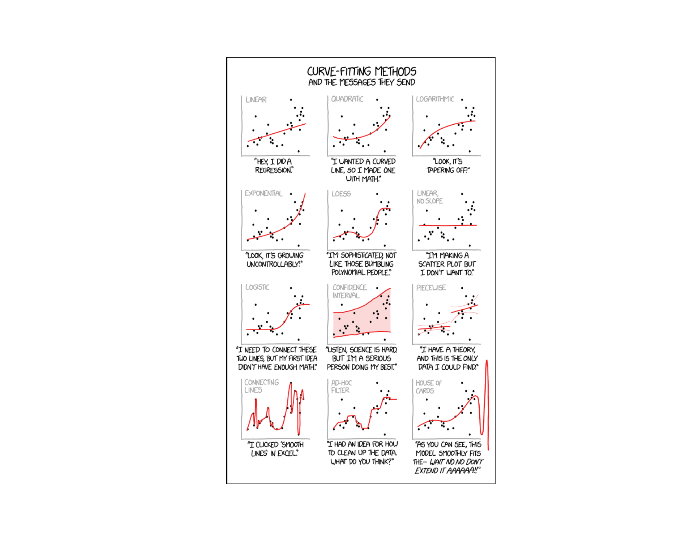
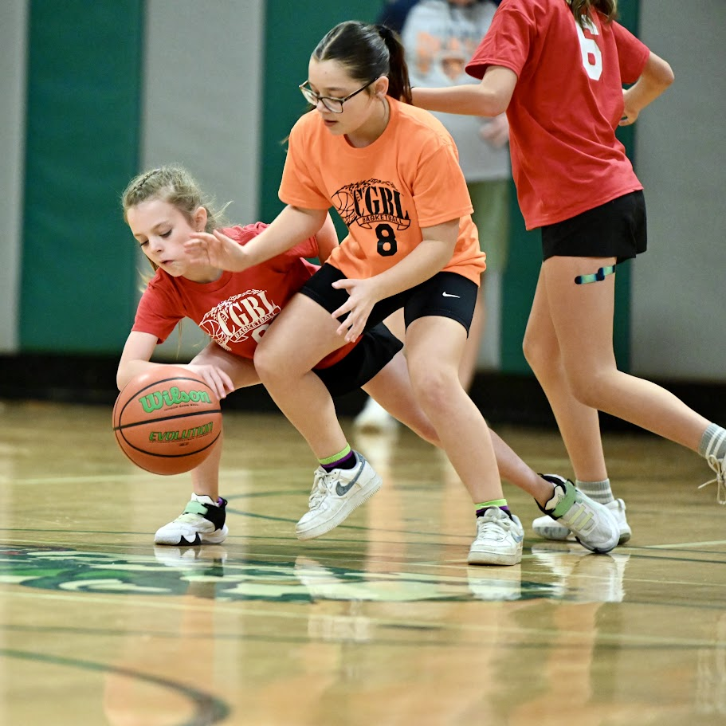
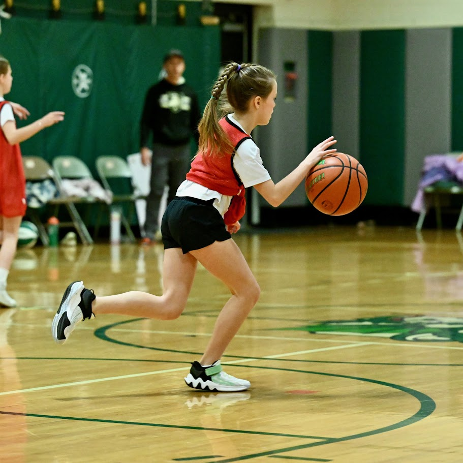
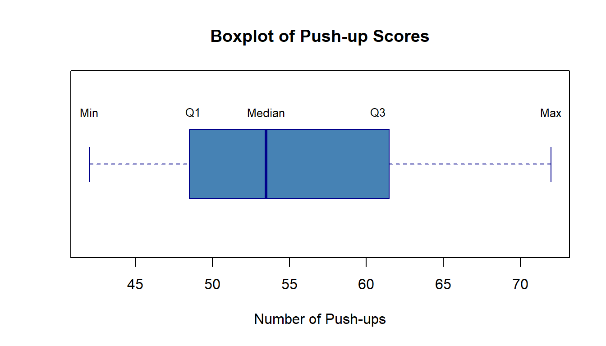

Lesson 3: Measures of Location
Cal
Reese


DMath Basketball!!
Math vs CME
NotePreviously 6-2
7-2

DMath Volleyball!!
Math vs Systems
NotePreviously 4-0
5-0

Math vs Systems
NotePreviously 5-0
6-0
Go To Vantage
ImportantVantage
Let’s go to Vantage and see if things are working.
Practical Exercise: Pulse Rate
TipData Collection
Let’s collect some real data!
- Find your pulse (wrist or neck)
- When instructed, count your heartbeats for 15 seconds
- Report your count to the instructor
We’ll use this data to practice everything we’ve learned in Lessons 1-3:
- Lesson 1: What is our population? What is our sample? Is pulse rate categorical or quantitative?
- Lesson 2: Create visual displays (stem-and-leaf, dotplot, histogram) and describe the distribution using S-C-S-O
- Lesson 3: Calculate measures of center (mean, median, mode) and discuss which best represents a “typical” pulse rate
Lesson 2 Review
Pictorial and Tabular Methods
Last lesson we learned about visual displays for data:
| Display | Best For | Preserves Exact Values? |
|---|---|---|
| Stem-and-leaf | Small datasets (n < 50) | Yes |
| Dotplot | Small datasets with repeated values | Yes |
| Histogram (Frequency) | Any size, raw counts | No |
| Histogram (Relative Freq) | Comparing groups of different sizes | No |
Describing Distributions: S-C-S-O
- Shape: Symmetric, skewed left, skewed right, unimodal, bimodal?
- Center: Where is the “typical” value?
- Spread: How much variability is there?
- Outliers: Any unusual observations?
Today we formalize center with numerical measures.
Lesson 3 Content
Objectives
- Calculate and interpret mean, median, and mode
- Determine percentiles and quartiles
- Compare measures of center for different distributions
Required Reading
Devore, Section 1.3: Measures of Location
Measures of Center
Why Measure Center?
Visual displays show us the shape of a distribution. But we often need a single number to summarize “where the data is.”
Three common measures:
- Mean (\(\bar{x}\)): The arithmetic average
- Median (\(\tilde{x}\)): The middle value
- Mode: The most frequent value
The Sample Mean
The sample mean is the arithmetic average of all observations:
\[ \bar{x} = \frac{1}{n} \sum_{i=1}^{n} x_i = \frac{x_1 + x_2 + \cdots + x_n}{n} \]
Properties:
- Uses every data point
- Sensitive to outliers (not resistant)
- The “balance point” of the distribution
Example: Calculating the Mean
Suppose 7 cadets reported their study hours last week:
Study hours: 8, 10, 12, 9, 11, 8, 45 Sum: 103 n: 7 Mean: 14.71 hoursIs 14.7 hours a good representation of a “typical” cadet’s study time?
WarningOutlier Effect
One cadet reported 45 hours. This outlier pulls the mean up significantly. Most cadets studied 8-12 hours, but the mean suggests nearly 15 hours.
The Sample Median
The sample median (\(\tilde{x}\)) is the middle value when data is ordered from smallest to largest.
Finding the median:
- Order the data from smallest to largest
- If \(n\) is odd: median = middle value (position \(\frac{n+1}{2}\))
- If \(n\) is even: median = average of two middle values
Example: Calculating the Median
Same study hours data:
Ordered data: 8, 8, 9, 10, 11, 12, 45 n = 7 (odd)Middle position: 4 Median: 10 hoursThe median (10 hours) is much more representative of typical study time than the mean (14.7 hours)!
The Mode
The mode is the value that occurs most frequently.
Study hours: 8, 10, 12, 9, 11, 8, 45 Mode: 8 hours (appears twice)Notes on the mode:
- A dataset can have no mode, one mode (unimodal), or multiple modes (bimodal, multimodal)
- Less commonly used than mean or median
- Most useful for categorical data or identifying clusters
Comparing Mean, Median, and Mode
| Measure | Formula/Method | Resistant to Outliers? | Uses All Data? |
|---|---|---|---|
| Mean | \(\bar{x} = \frac{\sum x_i}{n}\) | No | Yes |
| Median | Middle value | Yes | No |
| Mode | Most frequent | Yes | No |
Which Measure to Use?
| Distribution Shape | Relationship | Best Measure |
|---|---|---|
| Symmetric | Mean ≈ Median | Mean (or either) |
| Skewed Right | Mean > Median | Median |
| Skewed Left | Mean < Median | Median |
| Outliers Present | Mean pulled toward outliers | Median |
TipRule of Thumb
When in doubt, report both the mean and median. If they differ substantially, investigate why!
Percentiles and Quartiles
Percentiles
The \(p\)th percentile is a value such that approximately \(p\%\) of the data falls at or below it.
Common percentiles:
- 25th percentile = First quartile (\(Q_1\))
- 50th percentile = Median (\(Q_2\))
- 75th percentile = Third quartile (\(Q_3\))
Quartiles
Quartiles divide ordered data into four equal parts:
- \(Q_1\) (25th percentile): 25% of data below, 75% above
- \(Q_2\) (50th percentile): The median
- \(Q_3\) (75th percentile): 75% of data below, 25% above
Data: 61, 63, 65, 66, 66, 69, 69, 70, 70, 71, 71, 71, 71, 71, 72, 72, 75, 75, 75, 77 Q1 (25th percentile): 68.25 Q2 (Median): 71 Q3 (75th percentile): 72 Computing Quartiles
Method (Devore’s approach):
- Order the data from smallest to largest
- Find the median (\(Q_2\)) - this divides data into lower and upper halves
- \(Q_1\) = median of the lower half
- \(Q_3\) = median of the upper half
NoteNote
Different software may use slightly different algorithms for quartiles. The differences are usually small for large datasets.
Example: Finding Quartiles
APFT push-up scores for 12 cadets:
Ordered data: 42, 45, 48, 49, 51, 52, 55, 58, 60, 63, 67, 72 n = 12 Lower half: 42, 45, 48, 49, 51, 52 Upper half: 55, 58, 60, 63, 67, 72 Q1 = median of lower half = 48.5 Q2 = median of all data = 53.5 Q3 = median of upper half = 61.5 The Five-Number Summary
The five-number summary provides a quick snapshot of a distribution:
- Minimum
- Q1 (25th percentile)
- Median (Q2, 50th percentile)
- Q3 (75th percentile)
- Maximum
Five-Number Summary:Min: 42 Q1: 48.75 Median: 53.5 Q3: 60.75 Max: 72 Boxplots
A boxplot (box-and-whisker plot) visualizes the five-number summary:

Interpreting Boxplots
| Feature | What It Shows |
|---|---|
| Box width | Interquartile range (IQR = Q3 - Q1) - middle 50% of data |
| Line in box | Median |
| Whiskers | Extend to min/max (or 1.5×IQR from box) |
| Points beyond whiskers | Potential outliers |
Practice Problems
Problem 1
The following data represents daily high temperatures (°F) for a week in January at West Point:
28, 32, 35, 31, 29, 33, 30
NoteQuestions
- Calculate the mean temperature
- Calculate the median temperature
- Which measure better represents a “typical” January day? Why?
TipAnswers
Mean = \(\frac{28 + 32 + 35 + 31 + 29 + 33 + 30}{7} = \frac{218}{7} = 31.14°F\)
Ordered: 28, 29, 30, 31, 32, 33, 35 Median = 31°F
Both are appropriate here! The data is roughly symmetric with no outliers, so mean ≈ median. Either measure works well.
Problem 2
Annual salaries (in thousands) for employees at a small company:
45, 48, 52, 55, 58, 62, 68, 72, 85, 250
NoteQuestions
- Calculate the mean salary
- Calculate the median salary
- Which measure would you report as the “typical” salary? Why?
- Find Q1 and Q3
TipAnswers
Mean = \(\frac{45 + 48 + ... + 250}{10} = \frac{795}{10} = 79.5\) thousand ($79,500)
Ordered data (already sorted), n = 10 (even) Middle values are positions 5 and 6: 58 and 62 Median = \(\frac{58 + 62}{2} = 60\) thousand ($60,000)
The median ($60,000) is more representative. The CEO’s salary of $250,000 is an outlier that pulls the mean up to $79,500, which is higher than 80% of the employees actually earn.
Lower half: 45, 48, 52, 55, 58 → Q1 = 52 thousand Upper half: 62, 68, 72, 85, 250 → Q3 = 72 thousand
Problem 3
Two sections took the same quiz. Here are their scores:
Section A: 72, 75, 78, 80, 82, 85, 88 Section B: 60, 75, 78, 80, 82, 85, 100
NoteQuestions
- Calculate the mean and median for each section
- Which section performed better on average?
- Why do the means and medians tell different stories for Section B?
TipAnswers
- Section A:
- Mean = 560/7 = 80
- Median = 80
Section B: - Mean = 560/7 = 80 - Median = 80
Both sections have the same mean (80) and same median (80)!
This is a trick question - the means and medians are the same for both sections. However, Section B has more variability (spread from 60 to 100) compared to Section A (spread from 72 to 88). This illustrates why we need measures of spread (next lesson!) in addition to measures of center.
Summary
Key Takeaways
- Mean (\(\bar{x}\)): Arithmetic average; uses all data but sensitive to outliers
- Median (\(\tilde{x}\)): Middle value; resistant to outliers
- Mode: Most frequent value; useful for categorical data
- Percentiles: Values that divide data into parts (e.g., 25th, 50th, 75th)
- Quartiles: Q1, Q2 (median), Q3 divide data into four parts
- Five-number summary: Min, Q1, Median, Q3, Max
ImportantRemember
- For symmetric distributions: Mean ≈ Median
- For skewed distributions: Median is usually preferred
- Always consider outliers when choosing which measure to report
Before You Leave
Today
- Mean, median, and mode as measures of center
- When to use each measure
- Percentiles, quartiles, and the five-number summary
- Boxplots as visual summaries
Any questions?
Next Lesson
Lesson 4: Measures of Variability
- Range and interquartile range (IQR)
- Variance and standard deviation
- Comparing spread across distributions
Upcoming Graded Events
- WebAssign 1.4 - Due before Lesson 4
- Exploratory Data Analysis - Due Lesson 9
- WPR I - Lesson 16